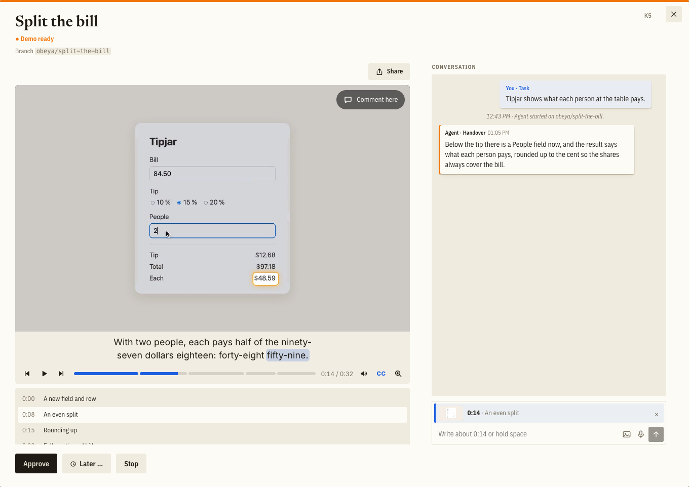

Stop testing your agents' work. Watch the demo.
Coding agents now write code faster than I can check it. If I test every change myself, I am the bottleneck. If I test nothing, I am gambling. A third way is older than software: the one who did the work shows it to the one who decides.
The new bottleneck
With one agent, testing its work by hand is fine. It finishes, I pull the branch, start the app, click through and say what is wrong. With five agents in parallel, that loop is my whole day. I set up test data, restart servers and repeat the same clicks to see whether a button moved. The agents wait for me, and I have become their QA department.
Faster agents make this worse. Each one finishes sooner, and every finished change queues in front of the one step that only I do. The diff does not help here. It says what changed in the code. It does not say whether the app now does what I meant.
How a director does it
An engineering director with dozens of people does not install every build and test manually. Instead, in a launch review, the team shows what it built. The director asks questions and sends it back or says ship it. Showing that the work works is the job of whoever did it.
Agents can work the same way. What most agent workflows lack is not more autonomy. It is the presentation at the end.
What the agent hands over
In Obeya, the tool I built for this, an agent always hands over with a demo: a narrated screen recording of the change in the running app, with chapters. A fix gets 30 to 60 seconds, showing the broken behaviour and then the fixed one. A feature gets one and a half to three minutes. With the video comes a short handover note, a few sentences on what the video cannot tell me: what is left open or unverified, a decision the agent took for me. It asks in the chat when it needs a decision from me, and proposes a new task for a problem it noticed outside its own.

A few rules make a demo evidence rather than a sales pitch:
- The app in the video runs the code under review.
- Every behaviour the change adds or alters, edge cases included, is in the video. That tests cover a behaviour is no reason to leave it out of the video.
- Backend changes get a demo too, through whatever view of the app makes them visible. If no view does, the agent adds one.
- When the result is something to look at rather than something that happens, such as a layout or three logo drafts side by side, the agent hands over a page instead of a video.
Recording the demo tests the change
To record a demo, the agent has to start the app, create the data, go through the flow and look at what the screen shows. That is an end-to-end test of its own work, run before I see anything, often letting the agent catch mistakes that automated code reviews missed. Before handing over, the agent also looks through stills of every scene of its video, so it can also catch visual issues like a label that is cut off.
The repository's tests and type checks still run before every handover. The demo does not replace them. It replaces the part where I click through the app myself.
What is left for me
I watch, at my desk or on my phone. I know my product, so in a minute I see whether this is what I meant. When something is off, I say so at the moment in the video where it shows: "this label should say the total, not the subtotal." What I say goes to the agent with that frame and the sentence the narrator was speaking. The agent goes another round and comes back with a new demo. When it is right, I approve and Obeya lands it on main.
My job changes from testing to deciding.
A record of every change
Every change that lands comes with its demo. Obeya is built with Obeya, agents wrote all of its code, and each change I approve goes on demos.obeya.si with the recording its agent made. That page is the changelog, and it is watchable. A colleague who missed a change watches its demo instead of asking for a meeting.
Try it
Obeya is an open-source canvas for directing coding agents. Every task is a card, each agent works in its own clone or worktree, and every handover is a demo. It runs on your machine and starts the agents through your own Claude Code installation and login.